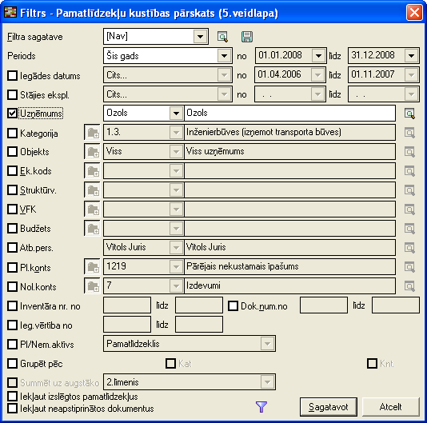
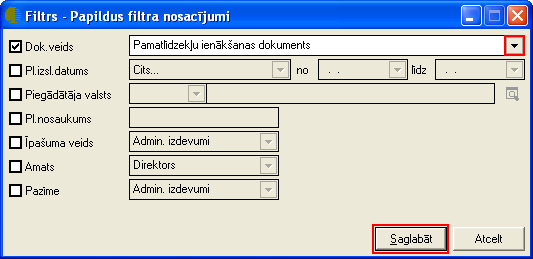

Pamatlīdzekļu kustības pārskats (5.veidlapa)¶
Pamatlīdzekļu kustības pārskata (5.veidlapas) atskaite tiek sagatavota uz norādīto pārskata periodu pēc noteiktiem atlasītajiem kritērijiem. Filtrs jāaizpilda, lai sagatavotu atskaiti.
Dati uz ekrāna tiek parādīti atbilstoši norādītajiem datu atlases kritērijiem filtra logā. Filtru var uzlikt, lai ierobežotu kādu datu parādīšanu uz ekrāna, iegūstot nepieciešamās izdrukas, vai arī ātrāk sameklētu nepieciešamos datus. Filtrs tiek izmantots arī atskaišu sagatavošanā un atsevišķu dokumentu satura aizpildīšanā.
Datu atlases kritērijus var saglabāt (  ).
Izvēloties izveidoto filtra sagatavi (
).
Izvēloties izveidoto filtra sagatavi (  ),
filtrs tiek automatizēti aizpildīts no filtra sagataves. Lai izveidotu
atskaiti pēc vēlamajiem kritērijiem, rīku joslā jānospiež poga
),
filtrs tiek automatizēti aizpildīts no filtra sagataves. Lai izveidotu
atskaiti pēc vēlamajiem kritērijiem, rīku joslā jānospiež poga
 (Ctrl+F), tiek atvērts filtra logs:
(Ctrl+F), tiek atvērts filtra logs:

Periods: periods par kuru tiks veidota atskaite;
Stājies ekspl.: pamatlīdzekļu vai nemateriālo aktīvu stāšanās ekspluatācijā datums (periods);
Uzņēmums: atskaite par vienu noteiktu uzņēmumu;
Kategorija: pamatlīdzekļu kategorijas;
Objekts: objekts, pa kura tiks veikta pamatlīdzekļu kustības pārskata atskaite;
Struktūrv.: stuktūrvienība;
VFK: (dimensiju dalījums);
Budžets: (dimensiju dalījums);
Atb.pers.: atlasīt par atbildīgo personu;
Pl.konts: pamatlīdzekļu grāmatvediskais konts;
Nol.konts: nolietojuma konts;
Inventāra nr.no…līdz… : iespēja atlasīt pēc pamatlīdzekļu inventāra numura;
Dok. nr.no… līdz…: iespēja atlasīt arī pēc pamatlīdzekļu dokumenta numura;
Iegādes vērtība no: atskaites kritērijs pēc iegādes vērtības perioda;
Pl./Nem.aktīvs: iespējams izvēlēties pamatlīdzekļus vai nemateriālos aktīvus;
Grupēt pēc: jāizvēlas pēc kura kritērija grupēt;
Kat: kategorija;
Knt.: konts.
Summēt uz augstāko: iespējams summēt uz dažādiem līmeņiem;
Iekļaut izslēgtos pamatlīdzekļus: lai iekļautu atskaitē arī izslēgtos pamatlīdzekļus;
Iekļaut neapstiprinātos dokumentus: lai iekļautu atskaitē arī neapstiprinātos kustību dokumentus.
Kad filtra loga kritēriji ir izvēlēti, ir iespējams nodefinēt Papildus
filtra parametrus, nospiežot pogu atvērtajā
filtra logā. Tiek atvērts papildus filtra nosacījumu logs:

Dok. Veids: sarakstlodziņa labajā pusē, noklikšķinot uz podziņu
 tiek atvērts dokumenta veidu izvēlņu
saraksts, kur iespējams izvēlēties kādu no pamatlīdzekļu dokumenta
veidiem;
tiek atvērts dokumenta veidu izvēlņu
saraksts, kur iespējams izvēlēties kādu no pamatlīdzekļu dokumenta
veidiem;
Pl.Izsl.datums: pamatlīdzekļu izslēgšanas datums (periods);
Piegādātāja valsts: piegādātāja valsts no Valstu saraksta ;
Pl.nosaukums: pamatlīdzekļa nosaukums;
Īpašuma veids: īpašuma veids kurš nodefinēts pamatlīdzekļu īpašuma veidu sarakstā ;
Amats: iespējams izvēlēties atbildīgās personas amatu kurš nodefinēts Amatu sarakstā ;
Pazīme: pazīme, kura nodefinēta Pamatlīdzekļu pazīmju sarakstā ;
Kad papildus filtra kritēriji izvēlēti, jānospiež paga
 un pamatlīdzekļukustību pārskata filtra logā,
ja visi atskaites datu kritēriji izvēlēti, jānospiež poga
. Lai drukātu sagatavotās atskaites datus,
rīko joslā jānospiež poga
un pamatlīdzekļukustību pārskata filtra logā,
ja visi atskaites datu kritēriji izvēlēti, jānospiež poga
. Lai drukātu sagatavotās atskaites datus,
rīko joslā jānospiež poga  (Ctrl+P), un
jāizvēlās iebūvētā izdrukas forma “pamatlīdzekļu kustības pārskats
(5.veidlapa)”, jānospiež poga
(Ctrl+P), un
jāizvēlās iebūvētā izdrukas forma “pamatlīdzekļu kustības pārskats
(5.veidlapa)”, jānospiež poga  .
.
- scale
100%
- scale
100%
- scale
100%
- scale
100%
- scale
100%
- scale
100%
- scale
100%
- scale
100%
- scale
100%
- scale
100%
- scale
100%